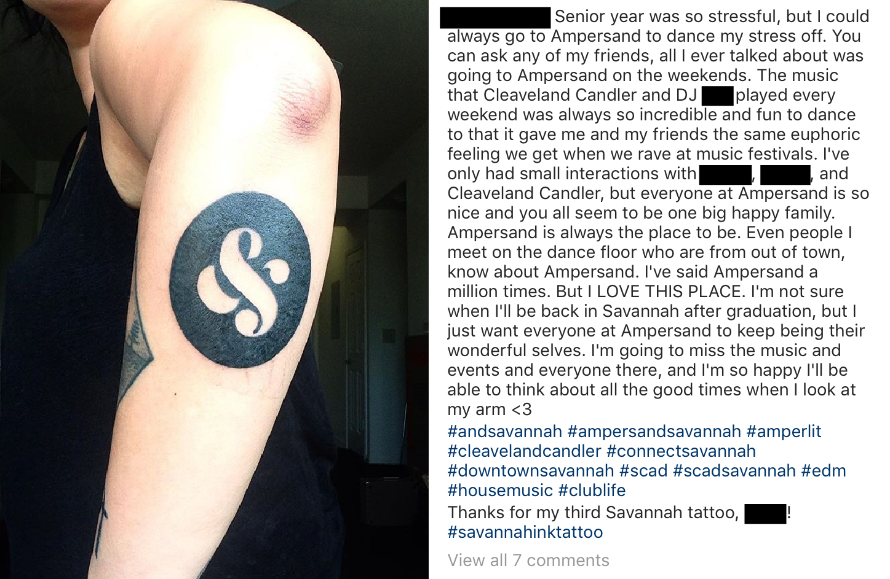
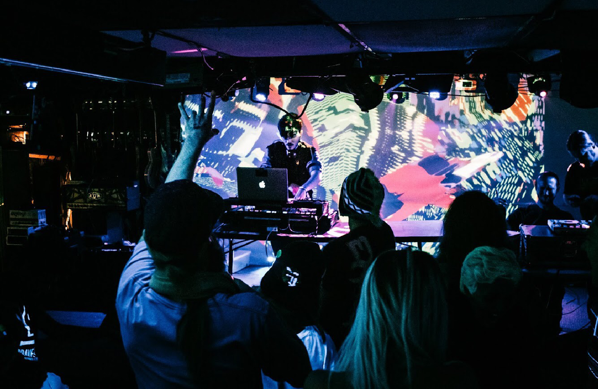
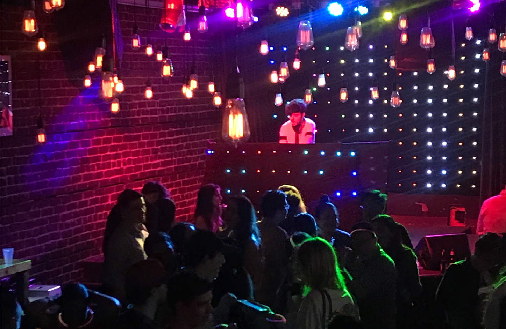

Disk Jockey
I began my DJ career in 2014, armed with an entry-level controller and a newfound love for electronic music. That was the year I left for college, and gigs consisted mostly of scattered house parties and dorm room B2Bs. These were fun, but I was hungry for more—and through a series of connections I had made at the aforementioned house parties, I got my wish. A resident DJ at Ampersand, a local Savannah nightclub, needed the night off one Saturday and called me to cover for him. The night went well enough that I was offered a residency of my own and continued to play weekly at Ampersand until the building was sold the following year.

With my foot lodged firmly in the door of Savannah's local EDM scene, and with Ampersand in the rearview, I had the opportunity to branch out a bit. I played more college parties, frequently subbed in for other local DJs, and even booked the occasional ticketed bass music event.

I graduated from college in 2018, and before I had a chance to consider what my next steps would be, I was offered a residency by one of the most prominent venue owners in town. I'd be playing 4–5 gigs per week at three different bars—Seed, Rogue Water, and Barrelhouse South. The pay wasn't glamorous, but I was gigging frequently enough to stay on top of my bills, and not many people can say they've supported themselves on music alone!

I continued in this fashion until March 2020, when COVID-19 disrupted the world. It was then that I moved back to my hometown and began my career in IT. I still break out the decks on occasion, but it's mostly just a hobby now, which I think I prefer. Though, I do still miss the electricity of playing a good set…